Everything I have worked out so far, then we set up yours.
Six lessons before we touch a laptop. AI should make you better at the thing you already do.
Ask the room: what do you already know better than most people?
POST205 · CRASH COURSE
AI should make you better at the thing you already do.
When I run a command I don't skip to the answer. I read what the model was working through on the way there, line by line, like a psychopath.
I wanted to know how it worked.
What you need to start: curiosity. If you want to know how the thing works and you are willing to poke at it, you can do this.
Where I'm coming from
I read the thinking.
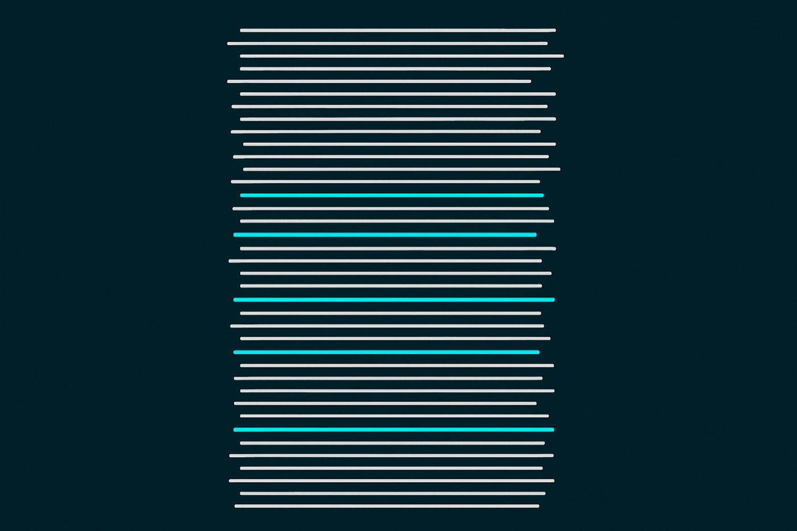
One: start your own thing. Build with AI, find clients, sell what you build. This is the one I went through.
Two: be the AI person where you already work. Same skills, aimed inward. The one in the company who knows how to make this work.
I came in through systems and automation. Then AI started automating faster than I could build the systems by hand.
Ask: which door are you walking through?
Lesson 01Why you're here
Two reasons people get into this.
It is getting noisy. Hard to tell who to follow, and harder to stand out when you are competing with people running the same demo you are.
Where the edge is: an accountant who has audited real books knows what a good budget looks like, and knows the places people get it wrong. The model does not have that.
Which is why tenure helps here. You already know how to decide, and deciding is the expensive part.
Lesson 01Why you're here
Everyone is offering AI services now.
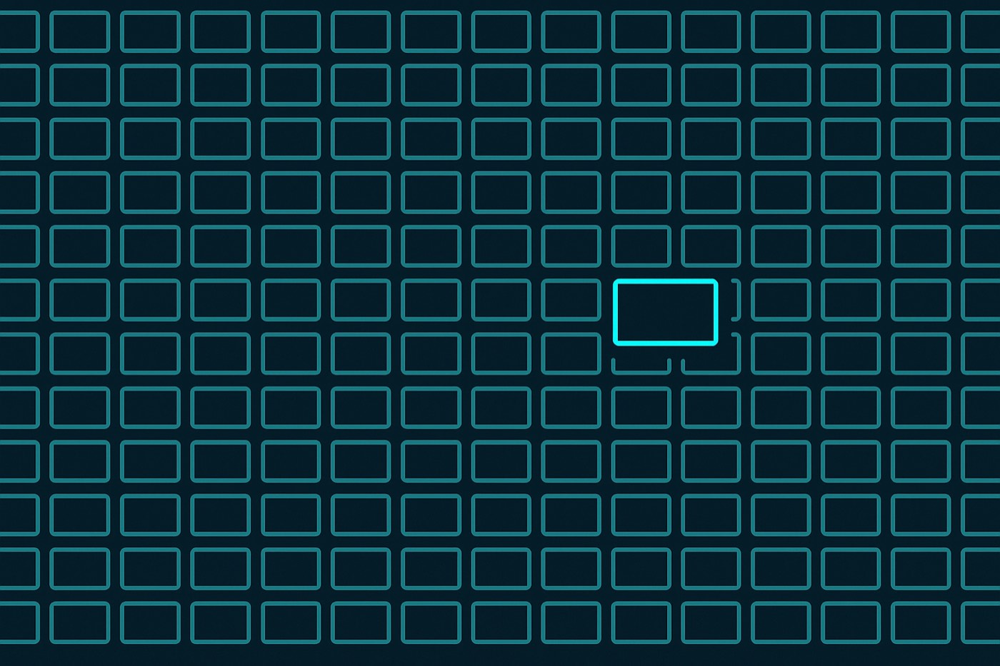
I stopped writing proposals. I build the thing, show it, and ask if they want to pay for it.
It is a lot easier than explaining what I would have built.
Lesson 01Why you're here
I stopped writing proposals. I just build the thing.
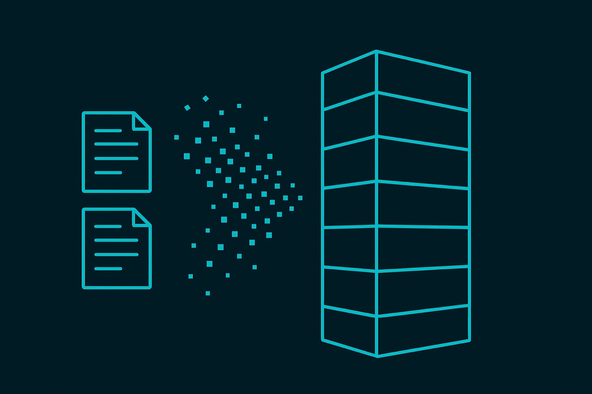
I am saying that as someone addicted to Claude Code.
What carried over from every system I have ever wired together was never the platform. It was learning what an API call is, and how to read an error instead of panicking at it.
That is why I know what to watch out for now.
Lesson 02Tools
Tools don't matter.
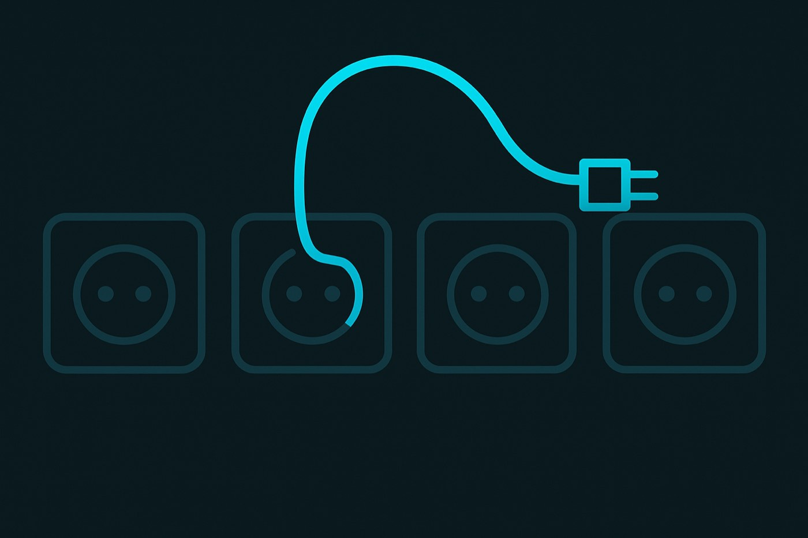
Same context, same files, I keep working. I never re-brief anybody.
Everything the AI needs to know about me and my business is written down in one place, in plain files I own.
Why it matters: you stop waiting for the perfect tool, and you stop panicking when your favorite one gets replaced.
Lesson 02Tools
When Claude Code goes down I switch to Codex.
Something lands on your desk. Your first move is either to try AI on it, or to do it the way you have always done it.
That is the whole difference.
Not how much you know. Not which model. What your hand reaches for.
Lesson 03Being AI native
Being AI native is what you reach for first.
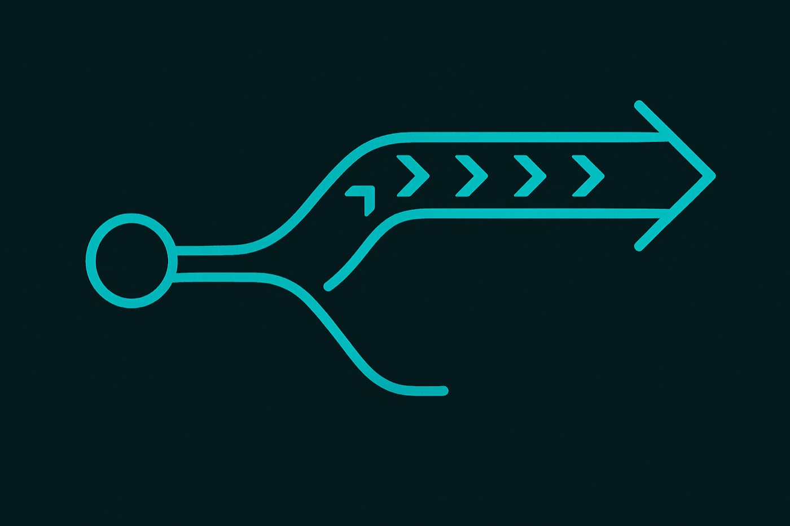
The old question was a yes or no gate, usually answered from memory, based on something you tried a year ago.
Now I ask to what extent. If it handles 75%, that is a win. If it handles 9%, that is still a win, because you are ahead of the person doing all of it by hand.
These tools are the worst they will ever be. Whatever it could not do last quarter, try it again this month.
Lesson 03Being AI native
The question changed.
We used to ask
Can AI do this?
Now I ask
To what extent can AI do this?
Everyone assumes the prize goes to whoever has the best prompt, the newest model, the fanciest skills. Any of us can open Opus 5 this afternoon.
Pause. Ask it out loud: so why don't we all get the same results?
Because everyone brings a different brain to it.
Lesson 04AI isn't the valuable part
We are all using the same model.
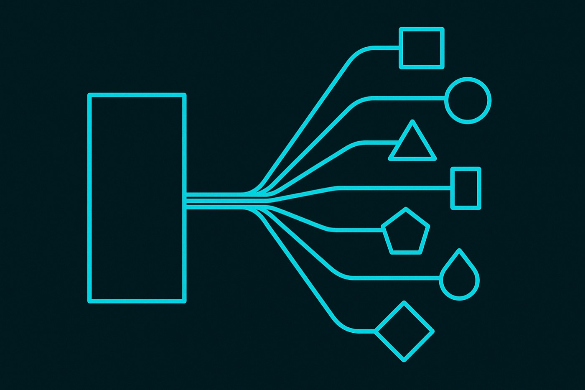
Every day it audits what I did. The next day it levels up from what it found.
The more I got wrong, the more there was to teach it.
What my machine knows now: the ways a website build goes wrong. What breaks in a back-office system. Which guardrails to put up, and what I always forget to prepare on security and privacy.
Lesson 04AI isn't the valuable part
Six months of teaching it my mistakes.
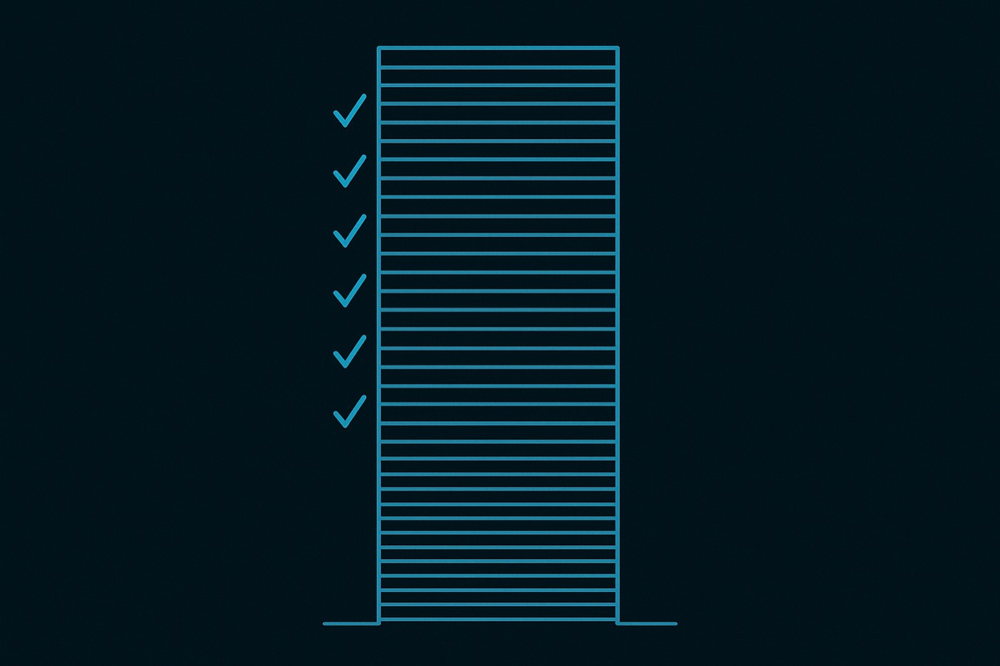
My skills, my systems and my instructions are full of don'ts. That list is my failures, written down where the machine can read them.
A beginner has no way to fake it.
Anthropic writes it the same way. “Don't add features beyond what was asked for.” “Don't add error handling or validation for scenarios that can't happen.”
This has a name. Context engineering.
Lesson 04AI isn't the valuable part
Most of what I write down is what not to do.
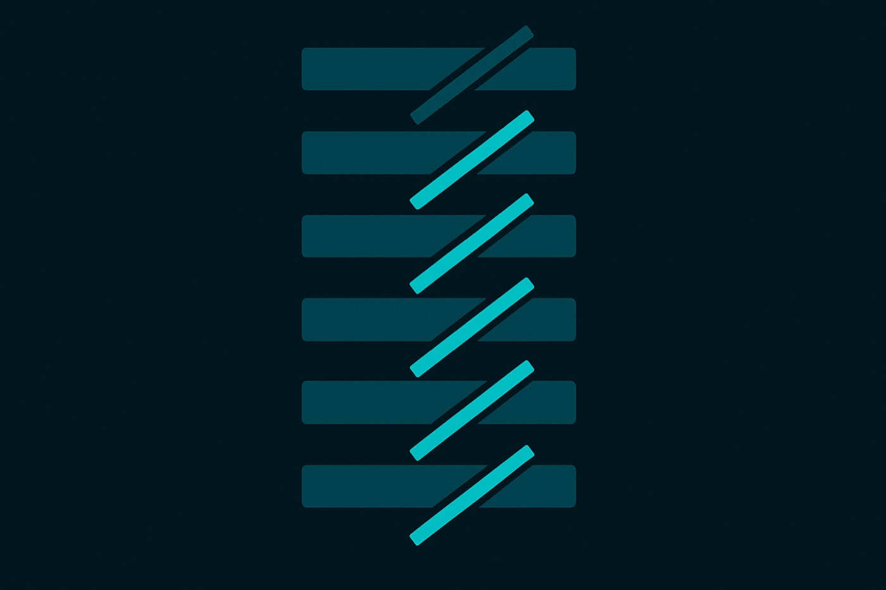
Your knowledge, your prompts, your instructions, your skills, the systems you build around it.
It is how you apply your own brain onto a powerful AI model.
Lesson 04AI isn't the valuable part
Context engineering is everything you put in around the model.
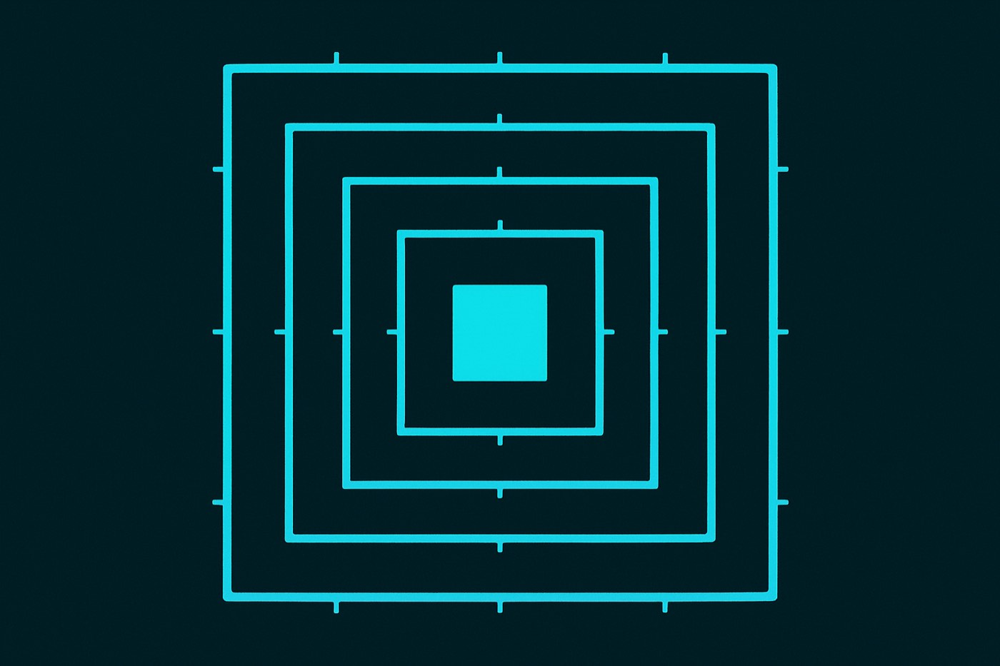
Most people type a request, get an output, feel let down, and decide the model is not smart enough.
I hand it a problem instead. “I want to increase revenue for my business.”
Then I make it tell me how it would go about that, and make it ask me questions until I am sure it understood what I meant.
If it has not asked you anything, it does not understand the problem yet.
Lesson 05Managing
Stop talking to it. Start managing it.
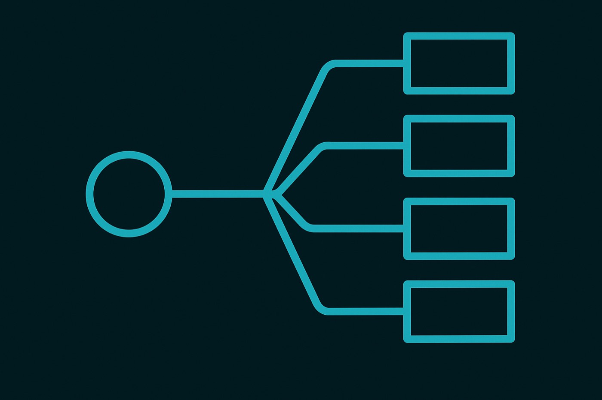
Ask what it thinks of your plan and it will tell you the plan is great. Every plan has blind spots, and that one will agree with all of yours.
The pre-mortem: tell it the plan already failed. Give it nothing else. Make it work out every reason why, then make it tell you how each one could have been avoided.
The red team: run the same plan past a skeptical customer, a competitor and an engineer. The customer is looking for the fatal flaw, the competitor for the upside you missed, the engineer for who maintains it in a year.
Lesson 05Managing
It is trained to please you.
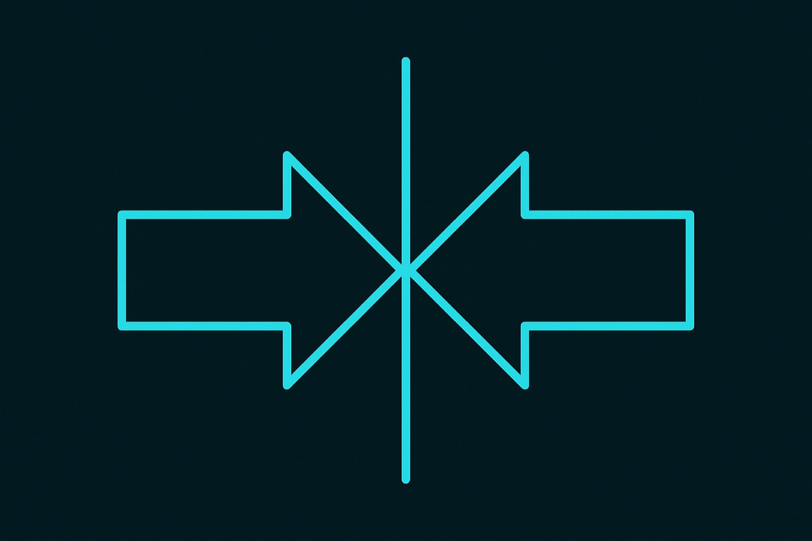
A goal, plus the condition that tells it to stop.
“Build a production-ready onboarding flow. Done means design and engineering could pick it up tomorrow and build it.”
Then it keeps going until that is true.
Then you delegate. One session for ideas, one for planning, one for writing, one for building, one for verifying. Each with its own finish line.
It becomes an employee that can hire its own staff, and it will only be as good as you are at managing it.
Lesson 05Managing
Give it a finish line.
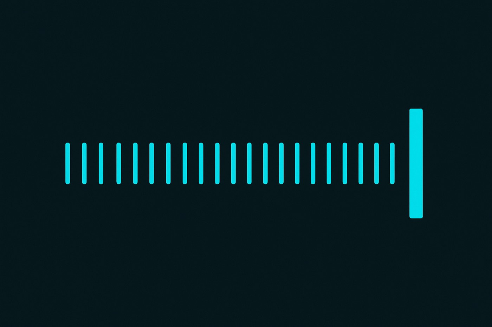
For anyone building agents, this is the one that matters most.
You ask for done. You get seventy percent.
So you give feedback and it fixes one thing. More feedback, it fixes another. You claw your way to ninety that way, one round at a time.
Ask them: how many of you have gone back and forth like this?
Then the turn: what if it checked its own work, and kept checking until it was actually done and could show you why it was confident?
Lesson 06Verify everything
You ask for done. You get seventy percent.
The setup is simpler than you think.
Ask yourself what you would do to check the work. Would you look at it? Would you test it? Would you run the signup yourself and see what happens?
Whatever that is, it can do it.
It can drive a browser. Run tests. Read its own output back. Come at the same thing from a few different angles and tell you where they disagree.
Beat here. Let it land before the next slide.
Lesson 06Verify everything
Whatever you would do to check it, it can do.
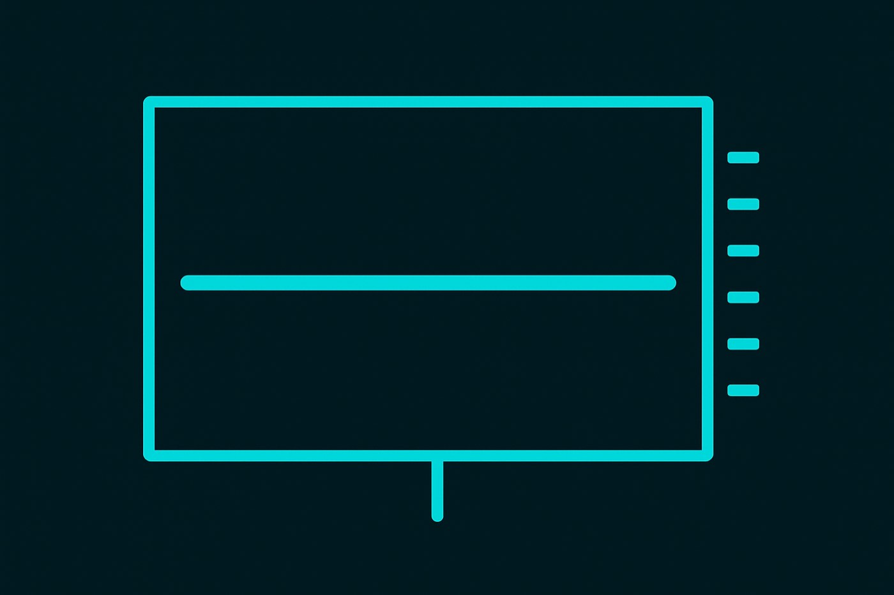
Every site I build goes through a screenshot loop.
It takes the screenshots and checks the balance itself. Checks it on mobile. Then it clicks every button, submits every form, and confirms the formatting held.
All the things I used to squint at myself.
Close the lesson: start making your AI verify the work you do. Make it prove to you that the work is complete.
Lesson 06Verify everything
Make it prove the work is done.
Handing an agent a tool and telling it not to touch that tool is handing someone a credit card and asking them not to spend.
One day they spend.
Lesson 07Grant access carefully
If it can reach something, assume it will eventually use it.
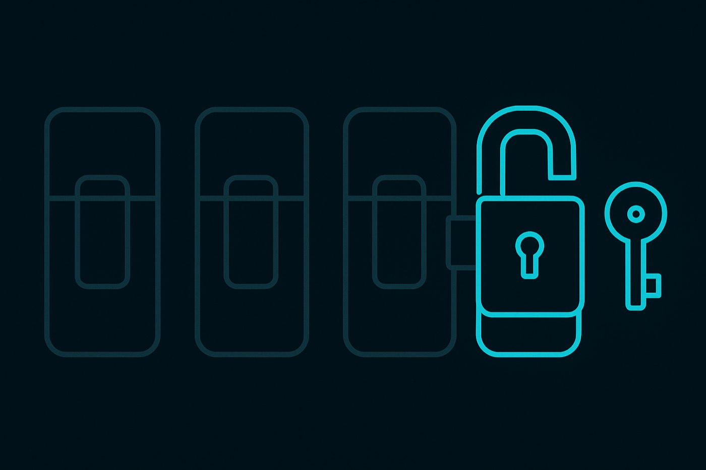
It will write drafts. Then one day it sends one, because the send tool was sitting there the whole time.
The prompt layer is where you write the rules. The model reads them and mostly follows them.
The tool layer is where you decide what it can physically do. Take the send tool away and it cannot send, whatever the prompt says.
A rule that lives in the prompt is a suggestion. A rule that lives in the tool is a restriction.
Lesson 07Grant access carefully
You can tell it to only write drafts.
Swap the model and it comes at the problem differently again. This is why a written rule holds only most of the time.
Keys work the same way. Hand over your Google Workspace and it has your calendar. If it can create events, assume it will create events.
Close the lesson: go through every tool, every database, every file, every key. Then answer one question about each. Can this thing send, or can it only draft?
Lesson 07Grant access carefully
Run the same prompt a hundred times, get a hundred results.
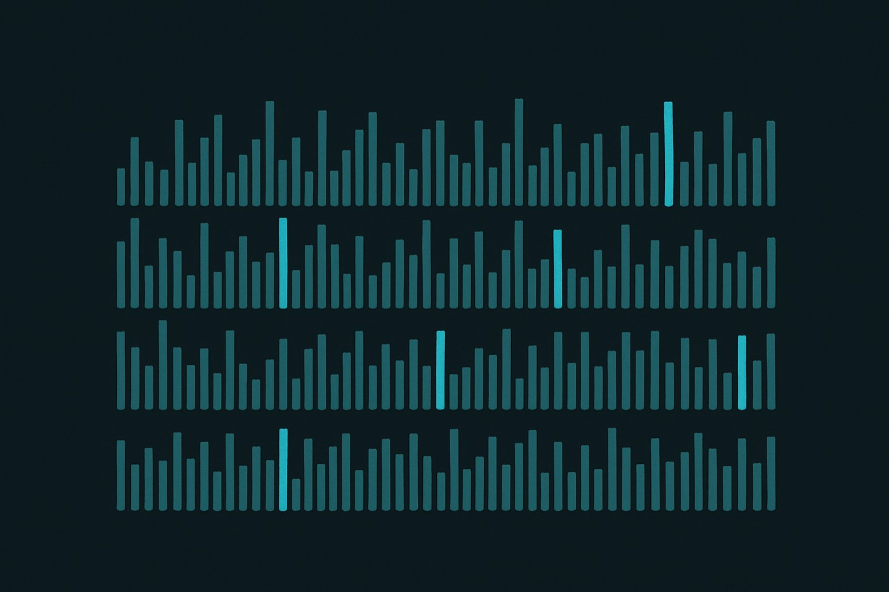
You have proven it worked one time, on one output.
The model is non-deterministic, so your real success rate is a range, and you have not measured it yet.
The fix: evals. Run it many times against cases you already know the answer to, and score what comes back.
More on this next time.
Lesson 08One success is not proof
Your agent worked once.
We call it an AI Operating System.
It lives in a folder on your laptop. You own it and you can read every file in it.
Part 2 · What we're building
An AI that knows your business, reaches your tools, does your repeatable work, and eventually moves before you ask.
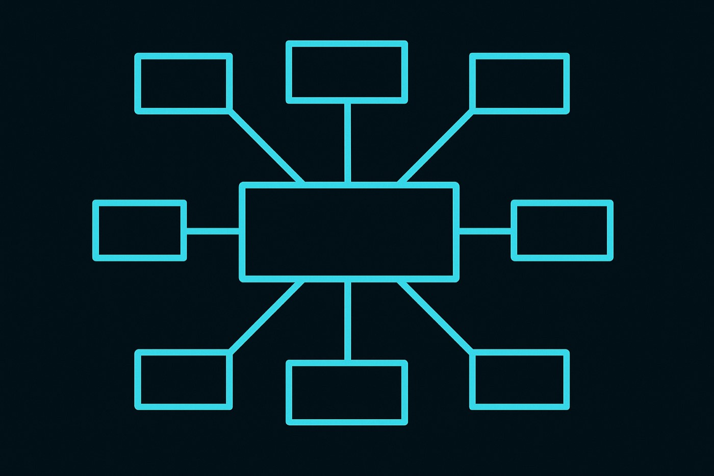
Everything we set up today is aimed at that one sentence.
Read it slowly. It is the whole point of the session.
Part 2 · What we're building
The test I hold it to
While you are away from your desk, it notices one real event and produces something faster and more accurate than what you would have made yourself.
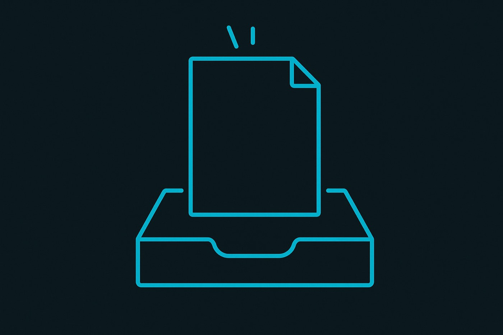
The first sign: someone asks you a question and you go ask your AIOS too, because you know it will answer better and show you where the answer came from.
The second: you stop trying to remember what you decided last quarter or what the client said in that meeting. You start trusting the retrieval.
Part 2 · What we're building
How you'll know it's working
The first sign
You ask it too
The second
You stop trying to remember
The Shift is how you think. Lessons 3 and 5, turned into a habit you can run on any task.
The Stack is what you build. Lessons 2 and 4, turned into an architecture you can score yourself against.
Learn The Shift first.
Part 3 · The two frameworks
Everything so far, compressed into two.
The Shift
How you think
The Stack
What you build
Question. To what extent can AI do this? Faster is the bar. Better is a bonus.
Cut. Eliminate before you automate. If nobody would notice a task disappeared, kill it. Automating waste gives you waste that runs faster.
Build. Context before tools. Small blocks, tested one at a time.
Part 3 · The Shift
Question · Cut · Build
That is how you would assess a new staff member.
Memory knows your business. Reach touches your tools. Skill knows how to do the work. Judgment knows what it may decide alone. Initiative moves before you ask.
Judgment is Lesson 7. Point back to it.
Part 3 · The Stack
You are onboarding a hire.
- 01MemoryIt knows your business
- 02ReachIt touches your tools and data
- 03SkillIt knows how to do the work
- 04JudgmentIt knows what it may decide alone
- 05InitiativeIt moves before you ask
Memory first, always. Reach and Skill together.
Settle what it is allowed to do on its own before you let it run unwatched.
Reverse those two and you have handed a new hire the company card and gone on holiday.
Part 3 · The Stack
The order is the whole trick.
Step one: install VS Code. The window everything happens in. Free.
Step two: add the Claude Code extension inside VS Code, then sign in.
Step three: clone the starter. The folder that becomes yours.
Wait here until everyone has all three. Do not move on with someone stuck.
Part 4 · Setting it up
Three steps and you are running.
- STEP 01
VS Code
code.visualstudio.com - STEP 02
Claude Code
claude.com/code - STEP 03
The starter
github.com/post205/claude-aios-starter
Seven questions, about fifteen minutes. Answer them out loud if that is easier.
At the end it writes your files and it knows who you are.
What it asks: who you are and what you sell. How you write. Your next 90 days. Where the money lands. Where you talk to people. Where the files live. What eats your week.
Part 4 · Setting it up
Day 1 is one word.
/onboard
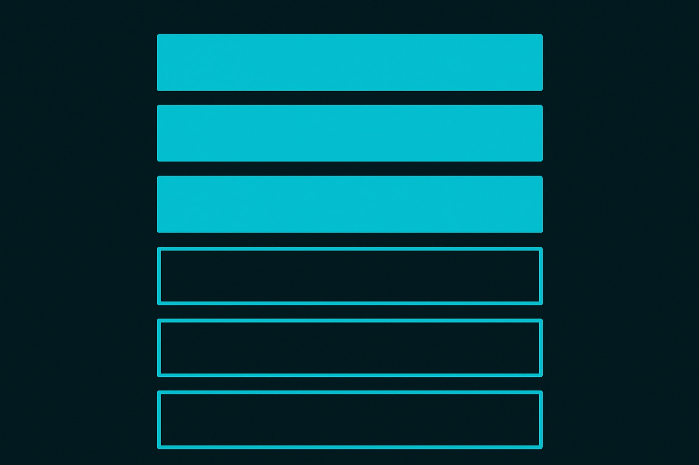
When it asks for two things you have written, open a real email and paste it raw. Typos included.
Anything you compose inside the chat is already shaped by the chat. Type it fresh and you teach it a voice that is not yours.
This is the rule I will not bend. Say it twice.
Part 4 · Setting it up
The one rule I will not bend
Paste your writing. Do not type it.
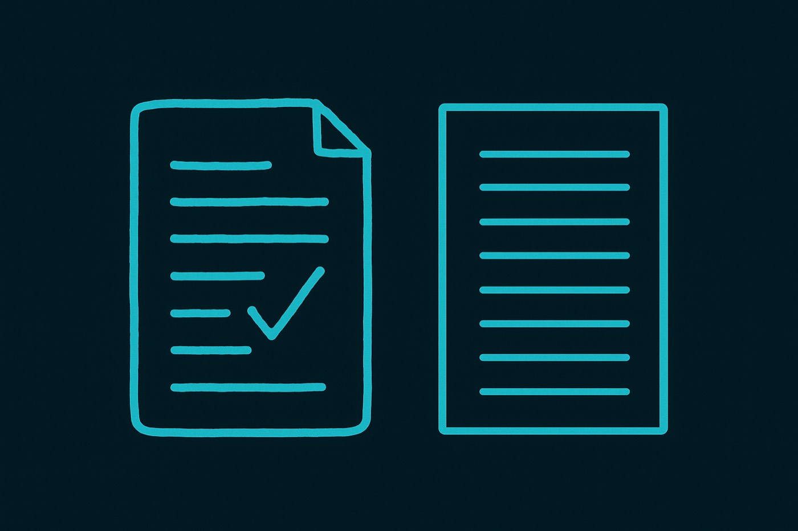
Day 1, onboard. Week 1, just use it, real questions and real decisions, and write down what you decide.
Day 7, audit. It scores the five layers out of 100 and names your biggest gap. Expect a low first score. Most honest setups start in the twenties.
Day 14, level up. It finds one task worth automating and ships it with you.
Then every Friday. One shipped thing a week.
This is the same audit and level-up loop from Lesson 4, running on their machine instead of mine.
Part 5 · Keeping it alive
Then it is a weekly habit.
- Day 1/onboardIt learns who you are and how you sound.
- Week 1use itReal questions, real decisions.
- Day 7/auditScores the five layers, names your biggest gap.
- Day 14/level-upShips one automation with you.
- Fridays/level-upOne shipped thing a week.
Automate one small piece of your week. Next week, pick another.
Kunin mo yung isa. Yung pinakamaliit.
Clone it, make it yours, and let it learn how you work.
Leave the repo on screen while they clone.
Close
Pick one small piece of your week.
Clone it, make it yours, and let it learn how you work.
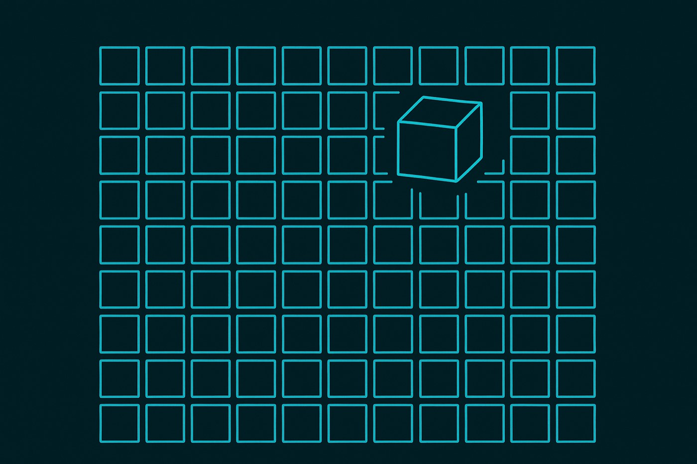